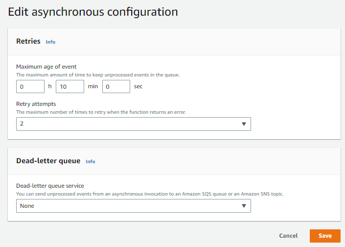
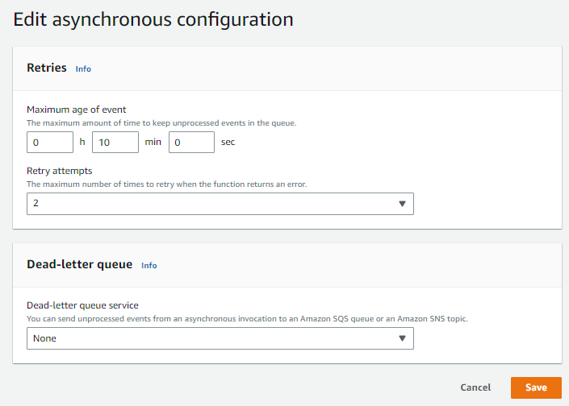
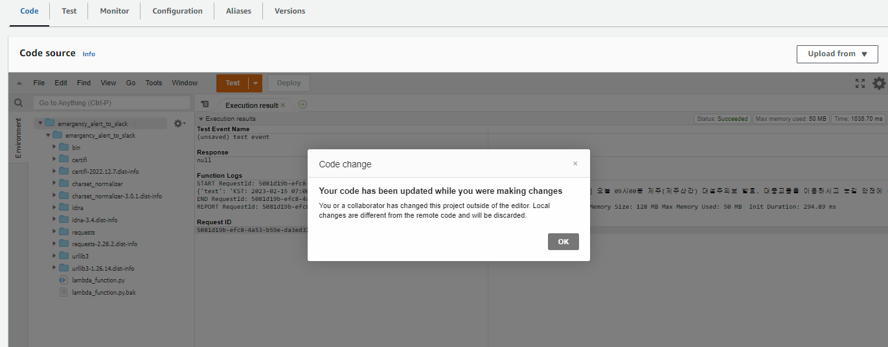
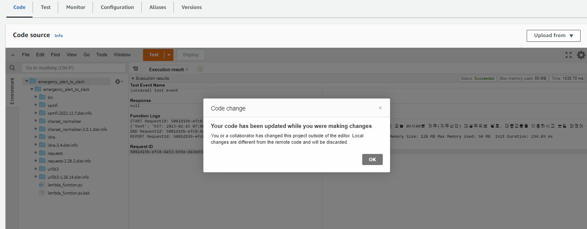

Process restart automation
목적
memory leak 이슈에 일단 자동으로 대응하기 서비스를 재시작 하는 파이썬 코드를 작성했습니다.
설명
- python3.4 부터 호환 가능하도록 작성했습니다.
- 서비스명을 argument 형태로 입력받습니다.
- 현재 메모리 사용량을 확인합니다. /proc/meminfo를 활용합니다. free나 top등의 명령을 이용하도 되지만 datadog에서 확인했을때 동일한 usage를 확인할 수 있는 방법은 /proc/meminfo를 열어보는 것 밖에 없었습니다
- 1번에서 입력받은 서비스가 현재 동작중인지 확인합니다. argument설정 에러로 현재 동작중이지도 않은 서비스를 실행시킬수도 있기 때문입니다.
- 1번에서 입력받은 서비스들을 stop & start 합니다
- process가 잘 올라왔는지 검증합니다. /proc/
를 이용해 확인합니다 - 서비스로그에서 추가 검증이 가능한 경우 로그도 검증합니다
코드
- 반출 불가능 한 정보는 제거하기위해 일부 삭제 또는 수정하였습니다.
- 로직은 지속적으로 개선 중입니다.
restart_process.py
import subprocess
import logging
import os
import argparse
import time
import socket
target_memory_percent = 80
log_file_location = {
"some_service_1": "/var/log/service_1.log",
"some_service_2": "/var/log/service_2.log"
}
log_file_keyword = {
"some_service_1": "load_success"
"some_service_2": "running"
}
restart_sleep_time = {
"some_service_2": 20
}
logger = logging.getLogger()
logger.setLevel(logging.DEBUG)
formatter = logging.Formatter('%(asctime)s %(levelname)s %(lineno)d %(message)s')
stream_handler = logging.StreamHandler()
stream_handler.setFormatter(formatter)
logger.addHandler(stream_handler)
def get_module_name() -> str:
"""
split with "-" and get first value
"""
hostname = socket.gethostname()
logger.debug("hostname:" + hostname)
module_name = hostname.split("-")[0]
logger.debug("module_name:" + module_name)
return module_name
def get_args() -> list:
"""
process를 argument형태로 입력받습니다
ex) sudo python3 restart_process.py abc efg 입력 시 abc와 efg를 순차적으로 재시작 합니다
"""
logger.debug("start_getting_parameters")
try:
parser = argparse.ArgumentParser()
parser.add_argument(
"target_process",
nargs="+",
help="<Required> input process names which has memory leak issue"
)
args = parser.parse_args()
target_process_list = args.target_process
for target_process in target_process_list:
logger.debug("process_selected_by_args:" + target_process)
return target_process_list
except Exception as e:
logger.error(e)
def check_memory_usage() -> float:
"""
memory usage가 target_memory_percent 변수값보다 큰 값인지 확인합니다
"""
logger.debug("start_checking_memory_usage")
try:
with open('/proc/meminfo', 'r') as f:
meminfo = {line.split()[0]: int(line.split()[1]) for line in f}
usage = 100 * (1 - (meminfo['MemFree:'] + meminfo['Buffers:'] + meminfo['Cached:']) / meminfo['MemTotal:'])
logger.debug("memory_usage:" + str(usage))
mem_usage = round(usage, 2)
return mem_usage
except Exception as e:
logger.error(e)
def restart_process(process_name: str, module_name: str) -> bool:
"""
target process를 입력받아 sudo service <process_name> stop && start 명령합니다
"""
logger.info("restarting:" + process_name)
try:
output = subprocess.call("sudo service " + process_name + " stop", shell=True, stdout=subprocess.PIPE, stderr=subprocess.STDOUT)
logger.debug("process_stopped:" + process_name + "|" + str(output).strip().replace("\n", ""))
if module_name in restart_sleep_time.keys(): #system hostname.split("-")[0]값이 restart_sleep_time dict에 존재하는 경우 재시작 전 대기
logger.debug("waiting_" + str(restart_sleep_time[module_name]) + "_seconds_before_restart")
time.sleep(restart_sleep_time[module_name])
output = subprocess.call("sudo service " + process_name + " start", shell=True, stdout=subprocess.PIPE, stderr=subprocess.STDOUT)
logger.debug("process_started:" + process_name + "|" + str(output).strip().replace("\n", ""))
except Exception as e:
logger.error(e)
def check_process(process_name: str) -> bool:
"""
/proc 싹 다 뒤져서 process가 잘 돌고있는지 확인합니다
"""
logger.debug("checking_process_status:" + process_name)
try:
pid_list = [int(p) for p in os.listdir('/proc') if p.isdigit()]
for pid in pid_list:
try:
with open(os.path.join('/proc', str(pid), 'cmdline'), 'rb') as f:
cmdline = f.read().decode('utf-8')
if (process_name in cmdline) & ("python" not in cmdline):
logger.info("process_is_running:" + process_name)
return True
except IOError:
continue
logger.debug("process_check_FAILED:" + process_name)
return False
except Exception as e:
logger.error(e)
def check_logfile(file_path: str, target_keyword: str, max_lines:int=100):
"""
file_path의 로그를 읽고 target_keyword가 등장하는지 max_lines만큼 지켜보다가
target_keyword가 등장하면 True를, 아니면 False를 반환한다
"""
logger.debug("start_log_verification")
line_count = 0
with open(file_path, 'r') as file:
logger.debug("log_file_opening_success")
# 파일의 끝으로 이동
file.seek(0, os.SEEK_END)
while line_count < max_lines:
# 새로운 라인을 읽음
line = file.readline()
# 새로운 라인이 없으면 잠시 대기한 뒤 다시 시도
if not line:
time.sleep(0.1)
logger.debug("no_new_line")
else:
logger.debug("reading:" + line.strip())
if target_keyword in line:
logger.debug("match_line_detected:" + line.strip())
return True
line_count += 1
logger.error("log_verification_fail")
return False
def main():
target_process_list = get_args()
module_name = get_module_name()
memory_usage = check_memory_usage()
if memory_usage >= float(target_memory_percent):
for target_process in target_process_list:
if check_process(target_process): #check process exist before restart process
restart_process(target_process, module_name)
time.sleep(3) #process 재시작 후 3초간 대기
check_process(target_process)
if target_process in log_file_location.keys():
# time.sleep(10)
if check_logfile(log_file_location[target_process], log_file_keyword[target_process]):
#logfile검증이 필요한 경우
logger.info("process_restart_succeed:" + target_process)
else:
#logfile을 검증할 필요가 없는 경우
logger.info("process_restart_succeed:" + target_process)
if __name__ == "__main__":
main()


 



 


 데이터를 잘 가져오고 있습니다(12)
데이터를 잘 가져오고 있습니다(12)